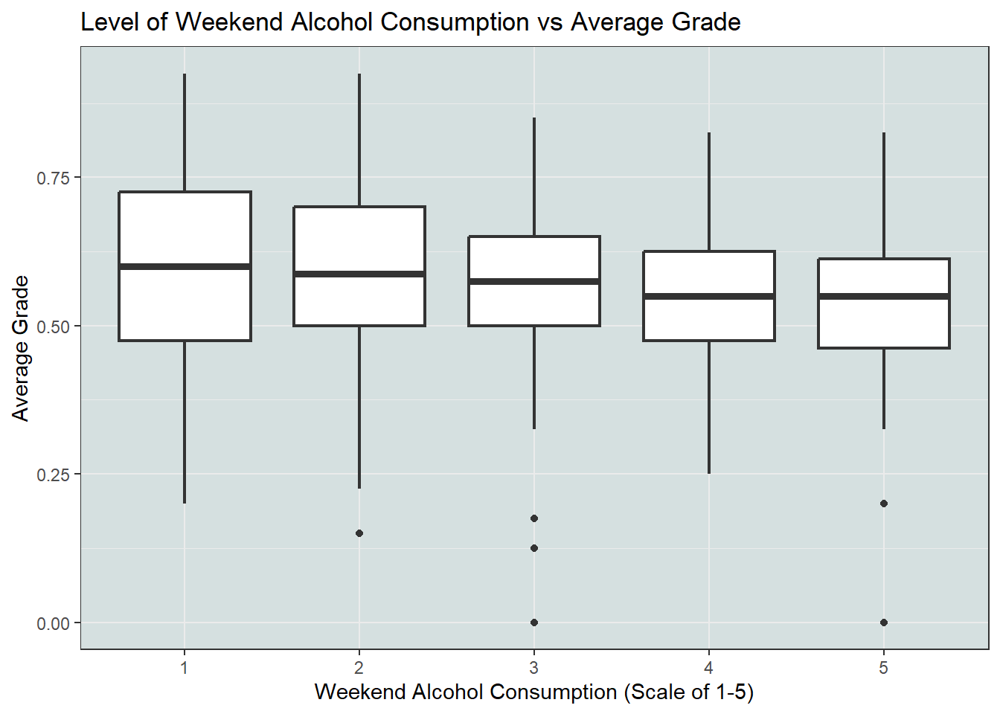
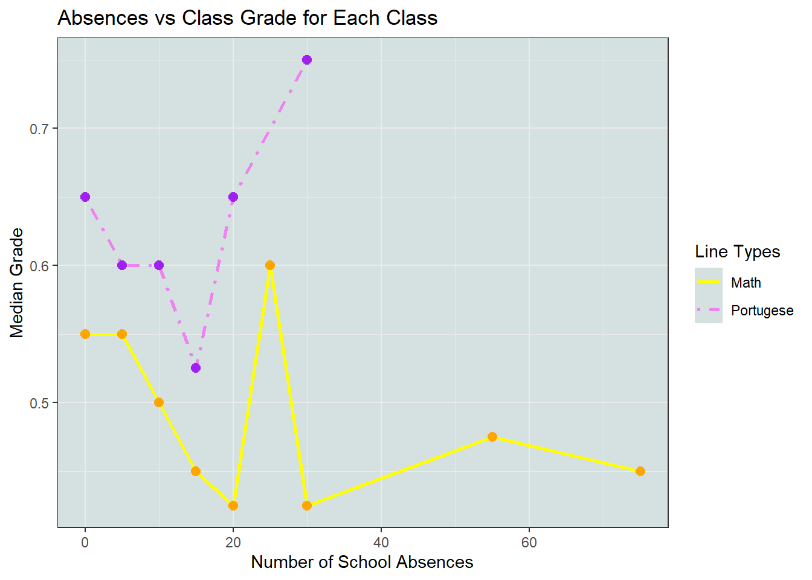
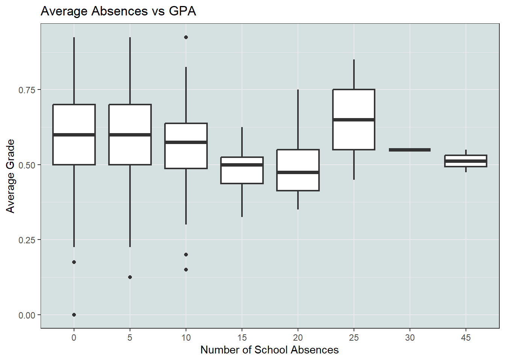
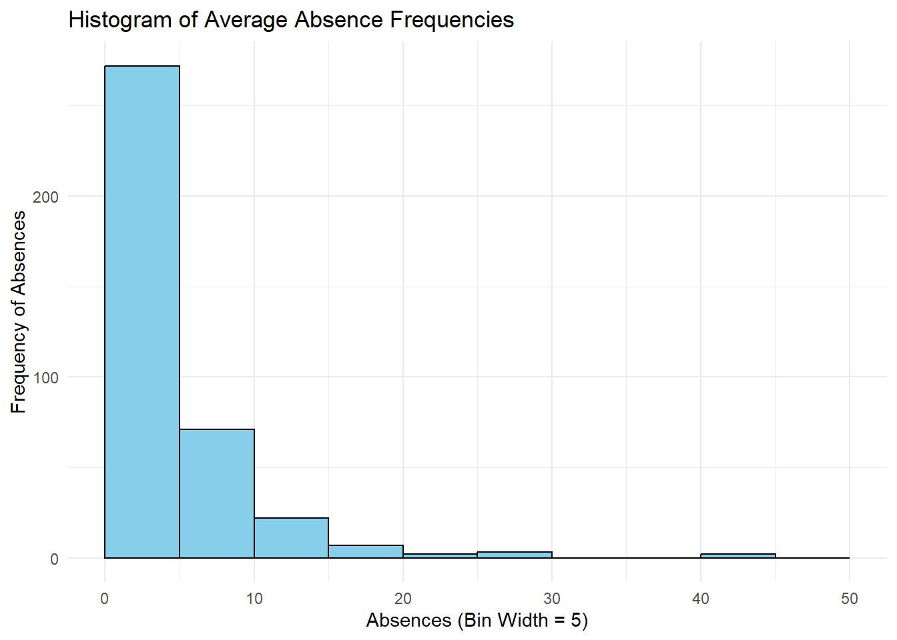
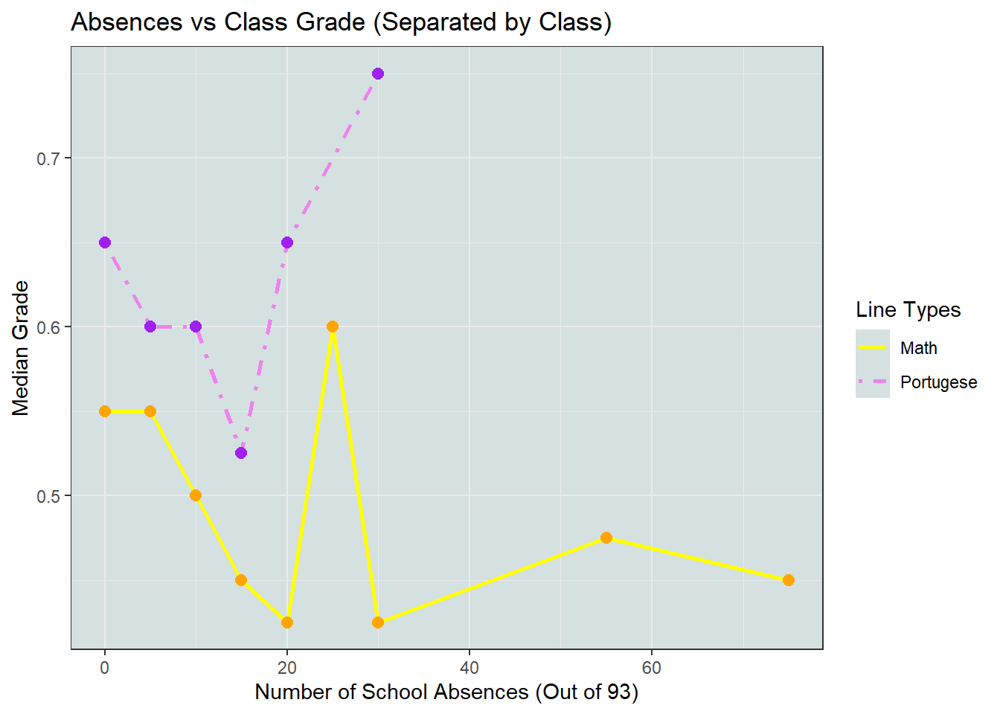
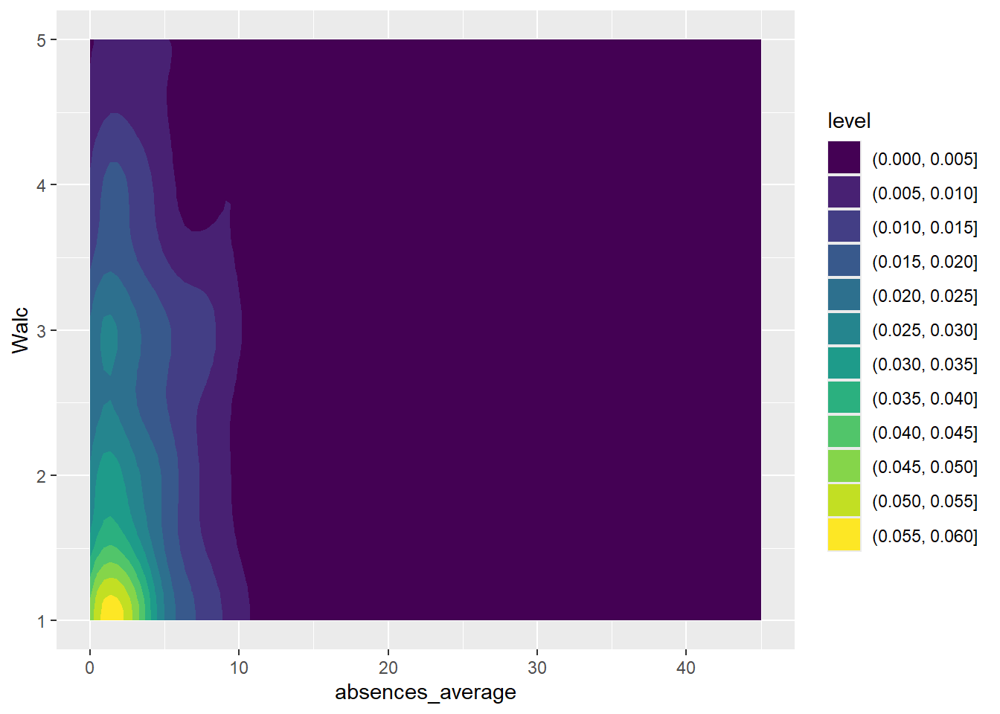

| Mean | Median | Mode | Standard Deviation |
|---|---|---|---|
| 0.5744063 | 0.575 | 0.6 | 0.163364 |
Stat 184 Final Project: The Effects of Weekend Alcohol Consumption and Absences on GPA
Introduction
Research Questions
For our final project, we are interested in how a student’s lifestyle affects their GPA. We consider two research questions: our initial research question is “Does alcohol consumption on the weekend negatively impact GPA?”, and to better understand the nature of variable distributions as well as to contrast the first research question, we consider a second research question “Do absences have a negative impact on GPA?”
We are correlating weekend alcohol consumption and absences with GPA instead of “study” (referring to study ours), since studying is…
Obvious— recommended by teachers, internet resources, and its benefits observed throughout one’s studies, college or not, and therefore our research would be redundant, and
Because students who study have social lives (to some degree or other) and, given the novelty of the college experience and to drinking and parties in general, should be made aware of the impact it has had for other students. With our research, we hope that they might rethink the degree and/or frequency of their behaviors depending on the results of our data analysis.
One last consideration: it should be noted that behaviors have consequences. While it’s possible to “make up for” flawed behavior, the number of hours one can allocate is the sum of the hours in a day. Therefore, there is an innate trade-off that will afflict every student. However, the degree of the trade-off is what we will be considering. If the trade-off for drinking every night is a tentative 5% decrease in GPA, that is magnitudes less important a realization compared to a 50% decrease in GPA. Thus, our analysis will focus on deducing that degree of exigence, such that students can reduce the “flawed behavior”, or at least deduce what went wrong in the event their actions had repercussions.
Data Introduction
We are using a dataset from the website Kaggle, which has a public catalog free for anyone to use. The specific dataset that we landed on was student_lifestyle_dataset.csv. It is a dataset collected by Sumit Kumar, a researcher from India for the academic year from August 2023 to May 2024 that monitored student’s (primarily from India) lifestyle habits in college.
It has 2000 cases each identified by a number going from 1-2000, with a recorded value for seven variables about their daily lifestyle, including ones of interest for us: sleep hours, social hours, and GPA (The author noted in a response to a comment that CGPA values were converted to GPA values to ensure usability for international researchers).
Our second dataset is also from Kaggle. It is data collected from a survey in math and Portuguese language classes of students in secondary (high) school. The data is split into two csv’s— student-mat.csv and student-por.csv— but we merged the two to create one big dataset and will use that in our analysis. Our final merged dataset contains 33 variables and 396 cases.
Analysis Outline
Our analysis will be focused on how many different variables impact a students average grade.Here we can see some basic information about average student grades. Most notably the average is low, being below 60%. Also the standard deviation is relatively large which give some insight to the variability of our data. We will take these into account when exploring our two analysis questions.
First we are going to look at the analysis of weekend alcohol consumption (WALC) on GPA. Going into this analysis, we are hypothesizing that there is a negative correlation between the two, that the more alcohol consumption a student partakes in, the lower their GPA would be.
Second, we will look at the impact of absences on GPA as well. At face-level, we think that absences will also negatively correlate with GPA, as we think that going to class is interrelated to succeeding academically. Therefore, the similarities between the effect of absences and alcohol will be useful as reference and to understand the nature of the dataset itself.
FAIR and CARE Principles
Our data meets the FAIR principles because we state our dataset title and exact file name in this document, so readers can use the exact same dataset if they wish to investigate our conclusions or perform their own research. We have a detailed description of how we found our data and what we intended to use it for in the earlier sections “Data Introduction” and “Aanalysis Outline”. Therefore, our data is easily findable, the data attached to this project so that it may easily be shared, the project itself on GitHub and in a universal .qmd format, and the contents of the data reusable because we plainly state that it is raw, but processed in this .qmd.
Regarding CARE principles, our data was collected through surveys in Math and Portuguese language courses. The students themselves voluntarily passed their survey information to the creator of this dataset, and the findings are used responsibly only to uncover and forewarn about the negative consequences of certain behavior. Therefore, this data was clearly given by each individual purely out of their own volition, and in this paper was used responsibly, ethically, and for the collective benefit of all people (students, anyways).
Data Analysis
Impact of Weekend Drinking on Grade Performance
This section will cover the analysis of weekend alcohol consumption and its relation to GPA. As stated in the introduction, this analysis is conducted on a combined data set of both the Math and Portuguese class. The analysis will be broken down into two parts:
Distribution of Drinking Habits: Understanding the distribution will help to contextualize our later analysis on the results being representative versus outliers.
Weekend Alcohol Consumption vs GPA: Visualizing the two variables to uncover the exact relationship between them.
Distribution of Drinking Habits

With this plot we can see the distribution of students and their tendencies to drink alcohol on the weekends. To expand on the caption, the dataset (and thus this visualization) were measured with a scale between 1 and 5, with 1 being “very low” (very little to none consumed), and 5 being “very high” (a lot consumed). We can see that over a third of the 396 students fall into the “very little to none consumed” category. Furthermore, there is a strong leftward skew towards not drinking a lot: the amount of students steeply descends as the amount of alcohol consumes increments upwards. The combined amount of students who rated their drinking “4” or “5” combined is equal to the amount of students who rated their drinking either “2” or “3”, and each of those is only half the number of students who rated themselves “1”.
Basically, we should make note of the fact that the distribution of students drinking a moderate amount is not that high, and there are even less data on students drinking a lot (4- or 5-rating). That’s not to say that the sample size is insufficient, though, just that these behaviors are “extreme” (statistically speaking) for the student body and thus the students involved “exceptional” (statistically speaking).
Weekend Alcohol Consumption vs GPA

Here we can see a comparison of Weekend Alcohol Consumption for students, and the distribution of their average grade. This box plot shows 5 boxes, each representing 1 level of weekend drinking. As established in the last section, level 1 being “very low” (infrequent/no drinking), and level 5 being “very high” (frequent drinking). The dots on the plot represent outliers: students with abnormally low average grades to the point they are more-accurately visualized as points than as part of the lowest quartile.
From this visualization we can learn a few things:
Students who consume less school on weekends will have higher grades on average. This can be seen with the black line in the middle of the box that represents that rating’s “median average grade”. We can see that the black line drops slightly with each increment of weekend alcohol consumption, indicating that the average grade is decreasing as weekend alcohol consumption is increasing. The decrease is from 60% (1-rating) to 55% (5-rating).
There is a larger distribution of average grades in levels 1 and 2 of alcohol consumption compared to higher levels. This relates back to the distribution chart we generated earlier: in that chart we observed that there are more students that fall into the lower levels than the higher levels. It’s worth keeping in mind that the quartile-variation (the amount of white area above and below the median line) in 1 and 2 is greater than the rest. Perhaps that’s simply because most of the students, good or bad, are in that category. But an alternative explanation is that there may be other variables that factor into a students average grade.
The lower quartile (the black line below the thicker median line) is roughly the same regardless of how low or high the alcohol consumption rating gets (with exception to a 5-rating). The upper quartile, on the other hand, drops significantly as alcohol consumption increases, dropping from 73% (1-rating) to 63% (5-rating).
Findings For Question #1
From our analysis, we observed a noticeable trend between weekend drinking habits and students’ average grades. The visualization revealed a slight but consistent decline in average grades as the level of weekend alcohol consumption increased— it decreased from an average of 60% (“very low” weekend alcohol consumption) to 55% (“very high” weekend alcohol consumption). Although that decrease was not substantial, it did steadily decrease at all levels, as did the lower and upper quartilles with all levels to a varying degree. Therefore, based on these findings, we can conclude that:
Increased frequency of drinking on weekends is associated with lower average grades. While not to that strong of a degree, an average 5%-decrease in median average grade still is a substantial drop-off. And given that the averages for these classes are only 55% to 60%, it is certainly possible that the decrease is amplified for courses which expect a 75%-85% average. Therefore, in the context of US grade averages, this would be a letter-grade’s worth in drop off.
Increased frequency of drinking on weekends doesn’t substantially impact lower-performing students, as the visualization in Figure 1.2 indicates a stagnant lower-quartile within 1-2% range-difference. This has no causative explanation, though, so lower-performing students should not arrive at the conclusion that their performance isn’t impacted by alcohol.
Increased frequency of drinking on weekends is strongly associated with a drop in exceptional-performance, as the visualization in Figure 1.2 indicates a substantial -10% across the upper quartile from 73% (“very low”) to 63% (“very high”). While not certainly-causative— perhaps every student who drinks some degree of alcohol is just a less-academically-able person— there is a strong correlation, and therefore students who want to maintain a high-grade standard should avoid consuming alcohol with any significant quantity or frequency.
Impact of Absences on Grade Performace
As we observed from our analysis of weekend alcohol consumption on GPA, there is a moderate inversely-proportional relationship between the “degree of drinking” of college students on weekends and their average performance between the two courses, Math and Portuguese.
However, as also mentioned during the previous data analysis, the difference is incremental with perhaps a 10% change in GPA between the most-infrequent and most-frequent drinkers. There are a number of ways to interpret this, as also mentioned in the previous data analysis: for starters, that the classes are relatively easy and thus the behavior quite unimpactful on the average GPA, or perhaps that students’ perception of their drinking compared to others is completely off-kilter. Regardless, the lack of change in the data is concerning.
Our next question will resolve or reinforce some of our doubts: depending on the reported impact or lack thereof of absences on GPA, our certainty in the conclusions for Alcohol to GPA may or may not waver.
Thus, we plan to investigate and judge several traits of the dataset with respect to itself, alcohol, and GPA:
Distribution of Absences: It’s important to consider which parts of the distribution are outliers, if any.
Absences vs GPA: How does a comparable box plot of absences sharing the same scale as GPA compare?
Absences vs Alcohol: Are these two variables correlated?
Distribution of Absences

Here, we observe that the vast majority of students— around 95% of them— miss between 0 and 15 absences Around three-foruths of students miss less than 5 classes. The range of students absent for between 10 and 15 classes accounts for around 7% of the absences. Past that point, the range between between 15 and 20 absences accounts for about 3% of the dataset, which comprise our outliers. Past that are our extreme outliers: around 2% of the dataset are outliers ranging from 20 and 30 absences, and between 40 and 45 absences accounting for another 1% of the dataset.
With that in mind…
- The students missing between 0 and 10 classes can be considered the “effective student body” for absence-based conclusions,
- The range between 10 and 20 the “regular” outliers, and
- Any student absent for more than 20 classes can be considered an extreme outlier.
However, it is important to note that these statistics are deflated somewhat. As the histogram illustrates “Average Absences”— the median between absences in Math and Portuguese— the cases where a student is absent predominantly in one class or the other are not distinguished. Therefore, the distribution for each individual class is likely more skewed than the distribution due to this graph flattening those outliers through the averaging process.
Absences vs GPA

To add some context to this data, the “absence” statistic in this dataset is a number ranging from 0 - 93, with 93 being the number of days in a semester. Also, each histogram represents the minimum of a bin-width of 5; for example, “0” indicates the distribution of data between 0 and 5 absences. And with that being said, the trend this dataset is illustrating is in-line with both our expected reality and the alcohol distribution, for within the “normal range” specified earlier (Section: “Distribution of Absences”).
Students missing between 0 and 15 classes are well-positioned to achieve normal grades. Though slightly less likely to obtain stores well above the median (a 3rd quadrant of about 0.7 versus 0.65), students within the 10 and 15 absence range are equally poised to perform about or slightly below the median grade.
Students missing between 15 and 20 courses see a drop-off on all fronts, be it their ability to exceed or even just obtaining the median. It can be observed that the drop-off is only a 7%-or-so dip in students’ average grade, from roughly 57% to roughly 50% median.
Students missing between 20 and 25 courses see a further drop-off, reaching a 10%-or-so dip from the initial 57% to a low 47% median average grade. This is at the end of the “outliers” specified earlier, and still affirms the inverse correlation between absences and grade.
Students exceeding 25 absences have a comparable distribution of GPA compared to students missing between 10 and 15 courses. Notably, this exceeds the performance of students missing between 15 and 25 courses, and therefore are in-contradiction to our hypothesis. However, since these are outliers even among the “Distribution of Absences” dataset, these outliers are infrequent enough to not meaningfully contradict our hypothesis— we can safely ignore them as the product of special circumstance.
Overall, in both instances, going to the extremes in their respective flawed behavior drops off their median GPA by about 7%. The distribution by-and-large affirms the conclusions arrived at in the first hypothesis: alcohol is affecting student performance, just not that substantially… but is that really the case? Is the problem that alcohol, absence, and all these flawed behaviors negligibly affect grade outcomes?
This visualization suggests that the reason why grade may or may not diminish because of flawed behavior can be explained by the “degree of participation” required for a course. One (arbitrary) way to define classes as “participatory” versus not is with the drop-off of grade between the the data points accounting for “averages” across 90% of students. In the above line plot, the drop-off is…
- -5% (
0-5to5-10), -5% (5-10to10-15), and -13% (10-15to15-20) for Portuguese students, and - -0% (
0-5to5-10), -5% (5-10to10-15), and -10% (10-15to15-20) for Math students.
As can be seen, in a course like Portuguese where there is a grade-response for missing an additional 5 courses on average (0-5 to 5-10 courses)— which we might call a “strong-participatory” course— there is a steeper drop-off for students taking the behavior to the extreme. In this case, we see a -13% Portuguese drop-off compared to -10% for a Math drop-off.
Therefore, the data sets support the interpretation that the relatively-small drop-off is not just a product of flawed behavior being relatively-inconsequential, but rather the class’s “degree of participation” muffling the effects of these behaviors. In other words, these effects will ramp up with the difficulty of the course, as participation becomes more and more mandatory. And one last thing: to delve just deep enough into statistics to reject “this data set is an outlier” as a counterargument, the sample size of 396 is sufficient for statistical significance, and even the range between 15 and 20 has n>10 data.
Absences vs Alcohol


Figure 2.4: Correlation Between Absences and Alcohol (Filtered for count > 1)
To consider one last element, we can visualize any correlation between absences and alcohol through two visualizations— a “Point Plot” indicating the weight of various absences and weekend alcohol consumption (Walc), and a heat map indicating the distribution of density across the former visualization. The “Point Plot” indicates that the data is most concentrated along “little Walc”: the bottom row with Walc = 1 has a number of absences ranging from 0-5 which capture a large percentage— maybe even half— of the total number of students. Then, there is a little vertical variation in Walc among students who miss between 0 and 5 classes: students who miss between 0 and 3 classes in particular have drinking habits ranging from 2 all the way to 4. In this case, the heat map is a much better visualization: observe how the density climbs upwards around that 0 to 3 absence range, and seemingly doesn’t grow proportionally to absences.
The data seems to perhaps have a vertical correlation between drinking and absences, but that’s just because, as revealed by Figure 2.1, that’s three-quarters of the student sample size, so naturally the density there will be greater. Overall, there is a distinct lack of any correlation between weekend alcohol consumption and absences. Therefore, there is, at least in the constraints of this study, no need to be concerned with your social life affecting class attendance, just GPA.
Conclusion
For our analysis of Weekend Drinking Habits and Average Grade, we can draw two conclusions:
The data consistently showed a gradual decline in average grades as the level of weekend alcohol consumption increased. While the decrease was modest, the trend was evident across all levels of consumption. This makes it safe to assume that for an average student, increasing drinking on the weekends would likely lead to a lower average grade, the impact increasing with every increment of “increased-drinking rating”.
While lower-performance students do not see much variation as the level of weekend alcohol consumption increases, there is a substantial 10% drop in the upper quartile between “1-rating”-drinking students and “5-rating”-drinking students. This makes it safe to assume that, for a student with higher standard of performance, increased drinking on the weekends disproportionately tank their ability to maintain that exceptional performance.
In the case of absences and GPA, we can conclusively express two concepts:
First, we observe a -7% drop-off in the median average grade for students missing 15 to 20 classes, and just a 3% drop-off in the median average grade for students missing between 10 and 15 classes. Given that only 10% of students even miss between 10 and 20 classes, and only 3% of students between 15 and 20 classes, it is safe to say that for the majority of students, having to miss a few courses does not substantially impact their performance in class.
That being said, that sentiment is upended for courses with a greater “degree of participation”. For strong-participatory courses, such as the Math course considered in this dataset, even missing 5-10 classes in opposed to 0-5 diminished students’ median average GPA by 5%, indicating that the impact of absences scales with the difficulty of the course. Therefore, for the courses where you would most struggle to pass, attendance is key.
Code Appendix
library(ggplot2)
library(dplyr)
library(tidyr)
library(knitr)
library(kableExtra)
data_math <- read.csv("../data/student-mat.csv")
data_port <- read.csv("../data/student-por.csv")
merged <- inner_join(data_math, data_port, by = c("school", "sex", "age", "address", "famsize", "Pstatus", "Medu", "Fedu", "Mjob", "Fjob", "reason", "guardian", "traveltime"))
clean <- merged %>%
select(school, sex, age, Walc = Walc.x, absences_math = absences.x, absences_port = absences.y, grade_math = G3.x, grade_port = G3.y) %>%
mutate(absences_average = round((absences_math + absences_port) / 2)) %>%
mutate(grade_average = (grade_math+grade_port)/2) %>%
mutate(grade_average = grade_average/20, grade_math = grade_math/20, grade_port = grade_port/20)
distribution <- ggplot(clean, aes(x = grade_average)) + geom_histogram(aes(fill = sex))
summary_stats <- clean %>%
summarize(
mean = mean(grade_average, na.rm = TRUE),
median = median(grade_average, na.rm = TRUE),
mode = as.numeric(names(sort(table(grade_average), decreasing = TRUE)[1])),
`standard deviation` = sd(grade_average, na.rm = TRUE)
)
summary_stats %>%
kable(
caption = "Summary Statistics for Average Grade",
booktabs = TRUE,
align = c("c", "c", "c", "c"),
col.names = c("Mean", "Median", "Mode", "Standard Deviation")
) %>%
kable_styling(
bootstrap_options = c("striped", "condensed"),
font_size = 16
)
ggplot(clean, aes(x = Walc)) + #Plot for weekend alcohol consumption distribution
geom_histogram(breaks = seq(0, 5, by = 1), binwidth = 1, fill = "skyblue", color = "black") +
labs(x = "Weekend Alcohol Consumption (Scale of 1-5)", y = "Frequency", title = "Histogram of Weekend Alcohol Consumption") +
theme_minimal()
#Plot of weekend alcohol consumption and average grade
ggplot( # Set our axis and data
data = clean,
mapping = aes(
x = factor(Walc),
y = grade_average,
)
) +
geom_boxplot(size = .8) +
labs( # Label our data
x = "Weekend Alcohol Consumption (Scale of 1-5)",
y = "Average Grade",
title = "Level of Weekend Alcohol Consumption vs Average Grade"
) +
theme_bw() +
theme(
panel.background = element_rect(fill = "#d5e0e0")
)
# Create a histogram for the distribution of "average absences"
ggplot(clean, aes(x = absences_average)) +
geom_histogram(breaks = seq(0, 50, by = 5), binwidth = 5, fill = "skyblue", color = "black") +
labs(x = "Absences (Bin Width = 5)", y = "Frequency of Absences", title = "Histogram of Average Absence Frequencies") +
theme_minimal()
# Flooring the data to the nearest 5 (e.g. 4 -> 0)
clean_v2 <- clean %>%
mutate(abs_avg_group_5 = round((absences_average)/5)*5)
# "Average Absences" boxplot
ggplot( # Set our axis and data
data = clean_v2,
mapping = aes(
x = factor(abs_avg_group_5),
y = grade_average,
)
) +
geom_boxplot(size = .8) +
labs( # Label our data
x = "Number of School Absences",
y = "Average Grade",
title = "Average Absences vs GPA"
) +
theme_bw() +
theme( # Move the legend
legend.position = "bottom",
panel.background = element_rect(fill = "#d5e0e0")
)
# Creating "Distribution Groups" of MATH and PORT
median_math <- clean %>%
mutate(abs_math_group_5 = round((absences_math)/5)*5) %>%
group_by(abs_math_group_5) %>%
summarise(med_math = median(grade_math))
median_port <- clean %>%
mutate(abs_port_group_5 = round((absences_port)/5)*5) %>%
group_by(abs_port_group_5) %>%
summarise(med_port = median(grade_port))
# Math Absences
ggplot() +
# Adding lines & points for both MATH and PORT absences
geom_line(data = median_math, mapping = aes(x = abs_math_group_5, y = med_math, linetype = "Math"), color = "yellow", linewidth = 1) +
geom_point(data = median_math, mapping = aes(x = abs_math_group_5, y = med_math), color = "orange", size = 2.5) +
geom_line(data = median_port, mapping = aes(x = abs_port_group_5, y = med_port, linetype = "Portugese"), color = "violet", linewidth = 1) +
geom_point(data = median_port, mapping = aes(x = abs_port_group_5, y = med_port), color = "purple", size = 2.5) +
labs( # Label our data
x = "Number of School Absences (Out of 93)",
y = "Median Grade",
title = "Absences vs Class Grade (Separated by Class)"
) +
scale_linetype_manual(
name = "Line Types",
values = c("Math" = "solid", "Portugese" = "dotdash") # Defining linetypes
) +
theme_bw() +
theme(
panel.background = element_rect(fill = "#d5e0e0")
)
# Creating a count for each (Walc, absences_average) point
abs_alc_ct <- clean %>%
select(Walc, absences_average) %>%
group_by(absences_average, Walc) %>%
mutate(count = n()) %>%
filter(count > 1)
# Creating a "Geom Point" grid for "Absences vs Alcohol" (excluding the few un-supported points)
ggplot(
data = abs_alc_ct,
mapping = aes(
x = absences_average,
y = Walc,
color = count
)
) + geom_point(size = 5)
# Creating a "heat map"
ggplot(data = select(clean, Walc, absences_average), aes(x = absences_average, y = Walc)) +
geom_density_2d_filled()